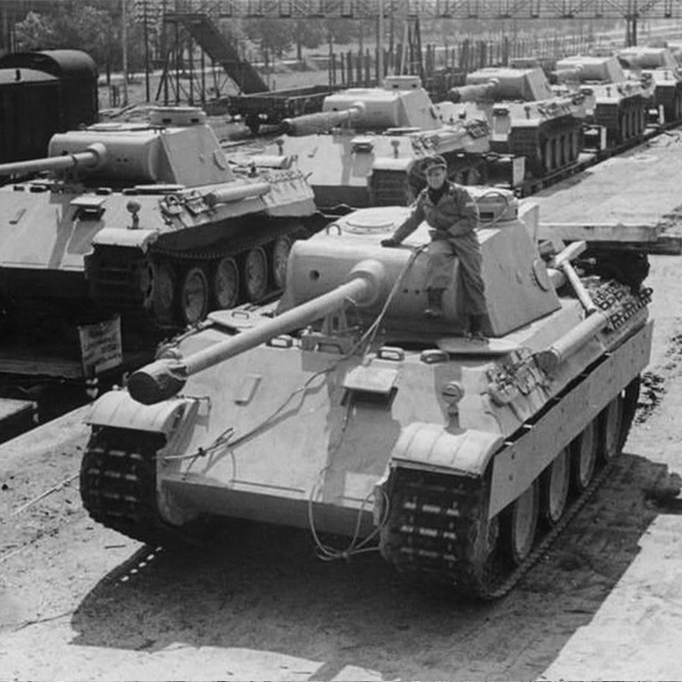

PzKpfw V Panther
Najlepszym czołgiem, który wziął czynny udział w walkach w trakcie II wojny światowej jest bez wątpienia niemiecki czołg średni PzKpfw V Panther. Prace nad nim ruszyły w 1941 roku. Według niektórych historyków nowy czołg był inspirowany radzieckimi T-34.
Chociaż faktycznie pojazdy łączy skośny pancerz, oba powstały w nieco innych realiach, a PzKpfw V nigdy nie był projektowany jako czołg szybki tak jak miało to miejsce w przypadku T-34/76. Czołg wyposażono w armatę KwK 42 L/70 kalibru 75 mm, która uznawana jest za jedną z najlepszych armat czołgowych II wojny światowej (ale gorszą od brytyjskiej 17 pdr kalibru 76,2 mm i niemieckiej KwK 36 L/56 kalibru 88 mm).


Ostatnia aktualizacja: 17.11.2019